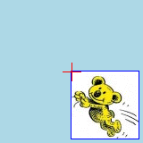
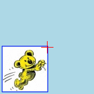
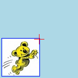
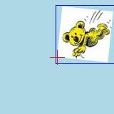
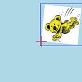
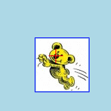
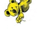

Index
 ImageMagick Examples Preface and Index
ImageMagick Examples Preface and Index
 Affine Matrix Transforms
Affine Matrix Transforms
- Affine Scaling
- Affine Flips and Flops
- Affine Shearing
- Affine Rotations
- Position of Affine Results
- Affine Translations
- Affine Result Re-Positioning
- Compound Affine Translations
- Affine Helper Scripts
- Other Affine Transform Methods
- Affine Transform DIY
(internal details)
The Affine Projection Matrix is not a simple distortion operator to
understand. But it is very versatile and fast to distort an image using it.
In this section we take a look at how the affine matrix works, both in
ImageMagick and all other Image Processors.
WARNING: See the first

message below.
Affine Transformations
The Affine Transformation is a general rotation, shear, scale, and translation
distortion operator. That is, it will modify an image to perform all four of
the given distortions all at the same time.
These are all 'linear' distortions, by which I mean two straight parallel
lines present in an image will remain straight and parallel. It is not a
perspective or trapezoidal transformation, which while lines remain straight,
they may not remain parallel.
Confused. I'm not surprised. Both Affine and Perspective Transforms are such a
general technique that it is difficult to understand. So I'll try to start
slow with what you have seen, and advance to more difficult aspects as we go.
The "
-affine" option
is a setting that defines a set of 6 numbers which fully defines the way an
image is to be distorted. The "
-transform" operator then performs this distortion.
You can in fact apply affine transformation in a number of simpler ways using
the newer
Generalised Distortion Operator "
-distort", but I will
use the older "
-affine" operator instead, as it has historically always
been available in IM.
The two options "
-affine" and "
-transform", are separated as the "
-affine" setting is also
use as a vector mapping for the "
-draw" command (see
Warp the
Drawing Surface). As such, be careful about mixing these options.
The arguments are supplied as a single comma separated string...
-affine sx,rx,ry,sy,tx,ty
These 6 numbers actually form a mathematical 'matrix' that translates a
position in the source image to a final position in the destination image, and
is expressed in terms of a 'matrix'...
| sx rx 0 |
| x', y', 1 | = | x, y, 1 | * | ry sy 0 |
| tx ty 1 |
This equates to the mathematical formula...
( x', y' ) = ( x * sx + y * ry + tx, x * rx + y * sy + ty )
This should be kept in mind, and we will re-visit it later. However for now
just note that this is the real meaning of a Affine transformation.
As a starting point, if you use a "
-affine" matrix of '
1,0,0,1,0,0', the above
formula will become...
( x', y' ) = ( x, y )
In other words, it will make
no changes to the image, and is the best
point to start our exploration of Affine Transformations.
Here we apply this transformation to our 'koala' image...
magick koala.gif -alpha set -virtual-pixel Transparent \
-affine 1,0,0,1,0,0 -transform +repage affine_null.png
| |
![[IM Output]](affine_null.png)
|
As you see nothing changed.
But there are a few things you should note about the above command.
The options "
-alpha set -virtual-pixel Transparent" while not very
important in the above, will be very important later. they basically tell IM
to add a alpha channel and make all pixels outside the input image
transparent. See
Transparent Virtual Pixel
Setting for more detail.
Also the image has been slightly enlarged by 1 pixel on all sides which is is
to ensure that any semi-transparency effects along the edges of the image are
also preserved.
I also used a "
+repage" operator to reset the images position after performing
the affine transformation. This is important as raw affine transformations can
not only change an images size, but also an images position. In many cases
a negative position is created which often does not work well with images used
on a web page.
This use of "
+repage"
with affine will be talked about in detail later, as a useful part of the
output from the affine transformation. But for now we will use it to ignore
any translation component in the result.
 |
Before IM v6.4.2-8, the "-affine" and "-transform" combination, used the affine subroutine that was
defined in the "-draw" operator. This affine distortion routine works but
causes sever aliasing effects in the
resulting image.
After IM v6.4.2-8 the "-affine" and "-transform" combination uses the new General Distort, Affine Projection method
to do work, with the Best-Fit option.
this produces much better results when strong scaling is applied.
But is also means the various other Distort Options can also be used.
As a result of this change the "-affine" and "-transform" options are obsolete, and users should
directly use the equivalent "+distort AffineProjection ..."
operator instead, with all its extra control settings and options.
|
Here is the same example again using the newer "
+distort" operator, and
producing the exact same result.
magick koala.gif -alpha set -virtual-pixel Transparent \
+distort AffineProjection 1,0,0,1,0,0 +repage affine_proj_null.png
| |
![[IM Output]](affine_proj_null.png)
|
The rest of these example use the old method as they were written long before
the new "
+distort"
operator became available.
Affine Scaling
The two '
1' values in the last examples, or the '
sx'
and '
sy' arguments, are scaling factors, and modifying these will
enlarge or shrink the image. The size of the resulting image will be adjusted
accordingly, so as to hold the complete result.
magick koala.gif -alpha set -virtual-pixel Transparent \
-affine 1.5,0,0,1.5,0,0 -transform +repage affine_expand.png
magick koala.gif -alpha set -virtual-pixel Transparent \
-affine 1.0,0,0,0.5,0,0 -transform +repage affine_shrink.png
|
![[IM Output]](affine_expand.png)
![[IM Output]](affine_shrink.png)
Note that the image are scaled to produce a simular result as "
-resize", but are not limited
to whole pixel boundaries. That is, you can have semi-tranparent (fuzzy)
partial pixels along the edges of the image. See
Resize Distort/Affine for more details.
Affine Flips and Flops
This may not seem exciting or interesting, but image scaling with a negative
will also produce "
-flip" and "
-flop" style of image transforms.
magick koala.gif -alpha set -virtual-pixel Transparent \
-affine 1,0,0,-1,0,0 -transform +repage affine_flip.png
magick koala.gif -alpha set -virtual-pixel Transparent \
-affine -1,0,0,1,0,0 -transform +repage affine_flop.png
magick koala.gif -alpha set -virtual-pixel Transparent \
-affine -1,0,0,-1,0,0 -transform +repage affine_180.png
|
![[IM Output]](affine_flip.png)
![[IM Output]](affine_flop.png)
![[IM Output]](affine_180.png)
Affine Shearing
The middle two zero arguments, '
rx' and '
ry', will
shear the image in a similar way the "
-shear" operator does.
magick koala.gif -alpha set -virtual-pixel Transparent \
-affine 1,.3,0,1,0,0 -transform +repage affine_shear_x.png
magick koala.gif -alpha set -virtual-pixel Transparent \
-affine 1,-.3,0,1,0,0 -transform +repage affine_shear-x.png
magick koala.gif -alpha set -virtual-pixel Transparent \
-affine 1,0,.3,1,0,0 -transform +repage affine_shear_y.png
magick koala.gif -alpha set -virtual-pixel Transparent \
-affine 1,.3,.3,1,0,0 -transform +repage affine_shear_xy.png
magick koala.gif -alpha set -virtual-pixel Transparent \
-affine 1,-.3,.3,1,0,0 -transform +repage affine_shear_rot.png
|
![[IM Output]](affine_shear_x.png)
![[IM Output]](affine_shear-x.png)
![[IM Output]](affine_shear_xy.png)
Note how this is different to the 'simpler'
Shear Operator, in that both the X and the Y shears are applied together,
rather than consecutively. This allows the affine version of shear (with some
proportional scaling) to perform proper rotations of the image about the
origin point.
The actual value use for the shear, is also not an angle, though is related
(see below). That is, a shear value of '
1' will result in a 45
degree shear, while a value of '
.5' is an approximate 30 degree
shear. This gets more complex however if some scaling or both X and Y shears
are also applied at the same time.
Affine Rotations
You may have noticed in the last example above that you can rotate an image
just by using shears. However when rotating an image by only using shears,
the image will become larger. To fix this you also need to make the image
slightly smaller by adjusting the scaling of the image. For example...
magick koala.gif -alpha set -virtual-pixel Transparent \
-affine .9,-.1,.1,.9,0,0 -transform +repage affine_rotate.png
| |
![[IM Output]](affine_rotate.png)
|
If you want to calculate the correct affine matrix to do proper unscaled
rotation for any angle you can use the following formula...
sx = cos(α); rx = sin(α)
ry = -sin(α); sy = cos(α)
where α is the angle to rotate in radians.
For example...
angle=-75; radians=`perl -e "print $angle * atan2(1,1)/45"`
sx=`perl -e "print cos( $radians )"`
rx=`perl -e "print sin( $radians )"`
ry=`perl -e "print -($rx)"`
sy="$sx"
magick koala.gif -alpha set -virtual-pixel Transparent \
-affine $sx,$rx,$ry,$sy,0,0 -transform +repage affine_rotate2.png
|
|
![[IM Output]](affine_rotate2.png)
|
To make this calculation easier I created a simple perl script, "
affine_rotate" to do these
calculations for you.
affine_rotate 25 > affine_rotate.txt
magick koala.gif -alpha set -virtual-pixel Transparent \
-affine `affine_rotate 25` -transform +repage affine_rotate3.png
|
|
|
|
|
More on this
Affine Helper Script later.
Position of Affine Results
You will have noticed the use of "
+repage" in just about all the above examples of using an affine
transformation. This is because the transformed image is not always
a acceptable value for displaying images on web pages.
So lets have a look at the raw canvas information generated by some of the
transformations we used above.
Here I perform a affine flop, shear, and rotate of the example image and
output the resulting images information, but I will not display the images
produced as they are the same as the previous examples, just having some
'negative' offsets making them un-displayable directly on a web page.
magick koala.gif -affine -1,0,0,1,0,0 -transform info:
magick koala.gif -affine 1,-.3,0,1,0,0 -transform info:
magick koala.gif -affine .9,-.1,.1,.9 -transform info:
|
First ignore the size of the virtual canvas generated by the transformation.
This size is of little importance as it is not always possible for it to be a
sensible value, though IM tries to make it sensible in most cases.
What is important is that the the final position of the images in all the
these cases have a negative value. This is the true location of the image
after the "
-affine"
transformation has been performed, and shows the image being transformed
around the 'origin' or top-left corner of the image.
If we use a little extra processing of the transformed into a '
viewport image', we can show how the image
was positioned relative to the images original origin or 0,0 position of the
original image.
magick koala.gif -alpha set -virtual-pixel Transparent \
-bordercolor blue -compose copy -border 1x1 -repage -1-1\! \
-compose over -crop 160x160-80-80\! -background lightblue -flatten \
-draw "fill red path 'M 80,70 80,90 M 70,80 90,80'" \
affine_null_view.gif
magick koala.gif -alpha set -virtual-pixel Transparent \
-affine -1,0,0,1,0,0 -transform \
-bordercolor blue -compose copy -border 1x1 -repage -1-1\! \
-compose over -crop 160x160-80-80\! -background lightblue -flatten \
-draw "fill red path 'M 80,70 80,90 M 70,80 90,80'" \
affine_flop_view.gif
magick koala.gif -alpha set -virtual-pixel Transparent \
-affine 1,-.3,0,1,0,0 -transform \
-bordercolor blue -compose copy -border 1x1 -repage -1-1\! \
-compose over -crop 160x160-80-80\! -background lightblue -flatten \
-draw "fill red path 'M 80,70 80,90 M 70,80 90,80'" \
affine_shear_view.gif
magick koala.gif -alpha set -virtual-pixel Transparent \
-affine 0.1,-0.95,0.95,0.1 -transform \
-bordercolor blue -compose copy -border 1x1 -repage -1-1\! \
-compose over -crop 160x160-80-80\! -background lightblue -flatten \
-draw "fill red path 'M 80,70 80,90 M 70,80 90,80'" \
affine_rot_view.gif
|

 

![[IM Output]](affine_shear_view.gif) 

Yes the above is complex, but adds a lot if information about the resulting
"
-affine"
transformation that is normally hard to see. First it adds a blue border
around the actual image data result without effecting the virtual offset of
the resulting image. This is then overlaid onto a viewport canvas, with the
origin or 0,0 point centered in the image. A red cross is draw at that point,
to show how the image relates to the origin of the original image after being
transformed.
Notice how in all the above transformations, the actual image generate is
given a negative offset. That is, the position of the very top left corner of
the blue box is either above or to the left of the origin. The Affine
transform does this as all the transformations performed leave the images
original origin (0,0 pixel) at the origin. That is, this point does not move
when an image is purely scaled, rotated, or sheared.
The only time the images original origin (or 0,0) point changes is if you also
give a translation component.
This special handling of virtual canvas offsets by the "
-transform" operator is
important so as to avoid loosing information about the results of the affine
transformation.
It also means that we can use that offset to set this images location
correctly when it is combined with other images.
Affine Translations
As a pure translation of an image (using an integer offset), only moves an
image to another location without distortion, the actual result of the
"
-affine"
transformation, is that the images page offset on the virtual page or canvas
is changed. However IM will still process each and every pixel in the image,
even though there only a simple change in offset.
For example this shows that the image has been move on the larger virtual
canvas, so that the koala's nose (pixel
28,24) is positioned at
the origin
magick koala.gif -alpha set -virtual-pixel Transparent \
-affine 1,0,0,1,-28,-24 -transform -identify koala_nose.png
|
As you can see from the identify output above, the image size was not changed,
though the offset of the image was changed. Unfortunately I can not display
the generated PNG image directly on this web page, as a negative offset can
cause undefined and often disastrous effects to the web browser output.
By taking a
viewport image of the result, I
can remove that negative offset and show how the image was translated relative
to the images virtual canvas.
magick koala_nose.png -virtual-pixel Transparent \
-bordercolor blue -compose copy -border 1x1 -repage -1-1\! \
-compose over -crop 160x160-80-80\! -background lightblue -flatten \
-draw "fill red path 'M 80,70 80,90 M 70,80 90,80'" \
koala_nose_vp.gif
|

Note how the koala image itself was left unchanged. Only its offset on the
virtual canvas was modified. However you should note that IM did still did the
calculations and processing needed for each and every pixel in the final
image.
In other words the result of a pure translation is that the image offset
changed, and that you can do more easily and directly using a "
-repage" operation with
a '
!' flag. Of course if your affine matrix does more than just
translate the image, or translates the image a fraction of a pixel, then you
are better off doing the translation as part of the "
-affine" matrix
transformation.
Translation components is an important part of a general "
-affine" transformation, as it
will allow you to rotate an image about any point on the image, or even
outside the image being transformed.
Affine Result Re-Positioning
 |
Note that negative offsets are ignored by GIF image format, and will be
saved as a zero offset, instead. On the other hand while the PNG file
format will save negative offsets, many web browsers and image programs
will not handle that situation, producing unexpected results.
|
It is because of this I have avoided displayed any affine image results that
contain a negative offset. Of course you can use negative offsets in PNG
images for later work, preserving the offset for later use.
For example if you save a image with a negative value into a GIF format image
the negative values are replace by zero. And while PNG images will correctly
save a negative position, it may have undefined consequences when displayed on
a web browser. For example some browsers have been known to generate extremely
large canvases for small PNG images with a negative offset. Of course the
JPEG image format just ignores any position and canvas information that may be
present.
So what can you do to correct the position of an image, so as to have a
positive offset. That depends on what you are trying to do.
After applying a affine transformation, you would then usually apply one of
the following operations, to adjust the canvas and offset of the resulting
image.
- Reset the image position with +repage
- If you just want the resulting image, and don't care about the offset
produced by the transformation, you can use "
+repage" to reset the page
information, just as we do in the examples above.
- Crop image to a new relative position
- Using a 'viewport crop' you can
reposition the image and look at it as if you are viewing it though a
window or viewport, onto the virtual canvas. An example of this is given
above in Position of Affine Results.
- Post Re-position of the Image
- You can always just translate the position of the resulting image. This
can be done by using an absolute "
-repage", a relative
"-repage"
(with a '!' option), or even by adding a Affine
Translation component to the translation matrix, to adjust the final
position of the image.
For example here is a correct flip affine transform, so that it is
positioned correctly (other than the need to "-shave" the extra edge
pixels that were added as a precaution.
magick koala.gif -affine 1,0,0,-1,0,75 -transform \
-shave 1x1 affine_goodflip.gif
| |
![[IM Text]](affine_goodflip.gif)
|
Note that the translation component of an affine transformation is
performed after the rotation and scaling has been completed. This
is what we will look at in the next section.
These are only some of the possibilities, and basically depends on just what you
want to do with the resulting image. All you really need to do is decide
whether you need to keep the offsets of the transformation, or not.
Compound Affine Translations
It is important to know that all the non-translation affine matrix methods
does not actually cause the 0,0 position of the image to move. The only time
this point actually moves was when either the generated offset of the image
was reset (generally using "
+repage") or you also translated the resulting image, as part of
the affine matrix.
However one of the most important uses of affine transformations is to rotate
images about a specific point, rather than the origin. And it is here that
things start getting much more difficult.
By re-positioning the image before the affine transformation, you can position
the point about which you want to rotate, at the origin. This point should
not move under a non-translation affine transformation, so that point will
still be at the origin after the rotation has been performed. You can then
move the image back to its original position, or some other position, in a
controlled way.
For example, in the example above we translated the koala image so that its
nose (pixel 28,24) was at the origin. Now lets rotate that image. and again
display a
viewport image of it on the larger
virtual canvas.
magick koala.gif -repage -28-24 -alpha set -virtual-pixel Transparent \
-affine .5,-.866,.866,.5,0,0 -transform koala_nose_rot.png
magick koala_nose_rot.png \
-bordercolor blue -compose copy -border 1x1 -repage -1-1\! \
-compose over -crop 160x160-80-80\! -background lightblue -flatten \
-draw "fill red path 'M 80,70 80,90 M 70,80 90,80'" \
koala_nose_rot_vp.gif
|
![[IM Output]](koala_nose_rot_vp.gif)
Notice that the rotation was around the origin, which due to the page offset,
is currently positioned on the koala's nose. Now if you translate the image
back by the original translation, we will have rotated the image about its
nose, but without the nose changing position.
That is, to properly rotate an image about a specific point you will need to
translate, rotate, and translate the image back again. The last two parts
being easily performed simply a single matrix.
Here is the complete process with the final translation also performed by
the affine matrix. Study it carefully and you will see that the koalas
nose did not move on the virtual canvas, relative to the origin (red cross).
magick koala.gif -repage -28-24 -alpha set -virtual-pixel Transparent \
-affine .5,-.866,.866,.5,28,24 -transform koala_rot_nose.png
magick koala_rot_nose.png \
-bordercolor blue -compose copy -border 1x1 -repage -1-1\! \
-compose over -crop 160x160-80-80\! -background lightblue -flatten \
-draw "fill red path 'M 80,70 80,90 M 70,80 90,80'" \
koala_rot_nose_vp.gif
|
![[IM Output]](koala_rot_nose_vp.gif)
Now affine matrices can of course do all three operations, all at the same
time, however calculating the affine matrix needed is not a trivial matter.
The following is the exact same operation, but with the appropriate,
all-in-one affine matrix.
magick koala.gif -alpha set -virtual-pixel Transparent \
-affine .5,-.866,.866,.5,-9.134,36.248 -transform koala_complete.png
magick koala_complete.png \
-bordercolor blue -compose copy -border 1x1 -repage -1-1\! \
-compose over -crop 160x160-80-80\! -background lightblue -flatten \
-draw "fill red path 'M 80,70 80,90 M 70,80 90,80'" \
koala_complete_vp.gif
|
![[IM Output]](koala_complete_vp.gif)
Note the position of the koala's nose relative to the origin has not changed,
even though the resulting image is now larger with a negative canvas offset.
To finish off lets repeat it again, but crop the image back to the images
original area, and flatten onto a white background.
magick koala.gif -alpha set -virtual-pixel Transparent \
-affine .5,-.866,.866,.5,-9.134,36.248 -transform \
-crop 75x75+0+0\! -background white -flatten koala_rot_nose.gif
|
![[IM Output]](../../images/koala.gif)
![[IM Output]](koala_rot_nose.gif)
A perfect rotate by 60 degrees about the koala's nose.
Affine Helper Scripts
As you can see in the examples above figuring out the affine matrix needed for
your transform is not always easy. In fact it can be very difficult and may
require a deep understanding of how affine matrices, and matrix calculations
are performed to achieve the desired result.
Because of this and to help in the creation of these examples I have created a
number of helper scripts to let you calculate the affine matrix you needed.
affine_rotate
The affine matrix in last example could be more simply calculated using the
"
affine_distort"
script I introduced earlier. If you supply this script with a extra argument
containing the point of rotation than it will calculate the correct affine
matrix to do it.
For example here we use the script to repeat the last example to rotate about
the koala's nose, but using a larger angle.
magick koala.gif -alpha set -virtual-pixel Transparent \
-affine `affine_rotate -110 28,24` -transform \
-crop 75x75+0+0\! -background white -flatten koala_affine_rotate.gif
| |

|
If you supply a second coordinate pair, the point of rotation (first
coordinate) will also be moved to the new position you give! For example lets
put the koala's nose of the last example near the bottom of the image.
magick koala.gif -alpha set -virtual-pixel Transparent \
-affine `affine_rotate -110 28,24 28,72` -transform \
-crop 75x75+0+0\! -background white -flatten koala_affine_rotate2.gif
| |
|
That is, you can take an image with a specific point, and rotate and
re-position the image using that 'handle'.
 |
This can also be directly achieved much more efficiently and directly using
the "+distort"
method 'SRT'.
|
affine_distort
The script
affine_distort" is a similar script, but will also allow you to
scale or flip an image before it is rotated and translated to a new position.
The argument order is a little different, making it a little harder to use,
but it is much more versatile.
For example lets repeat the last example, but also shrink the image, around
the repositioned 'handle'.
magick koala.gif -alpha set -virtual-pixel Transparent \
-affine `affine_distort 28,24 .5,.5 -110 28,72` -transform \
-crop 75x75+0+0\! -background white -flatten koala_affine_distort.gif
| |
|
The script however will not do any shearing of the image, but that is rarely
desired.
affine_transform
A affine transformation can be fully defined by the how a triangle of three
coordinates are translated.
For example, here I define three coordinates, but then give the same three
coordinates in a 'flipped' arrangement. The result is that the whole image
is flipped.
magick koala.gif -alpha set -virtual-pixel Transparent \
-affine "`affine_transform 75,0 0,0 0,75 75,75 0,75 0,0`" -transform \
-crop 75x75+0+0\! -background white -flatten koala_affine_transform.gif
| |
|
By giving the "
affine_transform" script two sets of three coordinates, we can
magick the movement of these points, into the correct affine mapping to
transform the whole image to match that movement.
Unlike the previous script this one can flip, scale and shear images, however
it is not so useful for rotating images, as you can not give it a direct angle
of rotation.
|
This can also be directly achieved much more efficiently and directly using
the 3 control point 'Affine'
distortion method.
And just like before that distortion method was actually a direct
development from that script into the Generalized
Distort Operator. However since its implementtation, the coordinate
entry has been reorder slightly differently. See Distortions Using Control Points.
|
Other Affine Transform Methods
As I explained at the start of the previous section, an affine matrix is a
linear equation that maps a point on the original image to a new position on
the destination image.
That is, given the affine matrix argument...
-affine sx,rx,ry,sy,tx,ty
Actually equates to the mathematical formula...
( i, j ) = ( x * sx + y * ry + tx, x * rx + y * sy + ty )
That is, given a point,
x,y on the starting image, that point is
remapped to the position
i,j on the destination image. Quite
straight forward really.
For example suppose we have this simple image of a stylized spaceship, drawn
using various lines form one point to the next.
magick -size 80x80 xc:skyblue -fill red -stroke black \
-draw 'path "M 15,5 20,35 25,5 Z M 10,25 30,25" ' \
spaceship.gif
| |
![[IM Text]](spaceship.gif)
|
This is basically a very simple '
vector graphic',
and has very well defined points on the original image.
The by using a relatively simple affine matrix such as "
-affine
'1,-1,1,1,15,55'" we can map each of the coordinates for our space ship
to a new position.
For example lets do the affine calculations to the first drawn coordinate of
the above spaceship.
x,y = 15,5
i,j = x*sx + y*ry + tx, x*rx + y*sy + ty
=> 15*1 + 5*1 + 15, 15*-1 + 5*1 + 55 => 35,45
|
That is, the coordinate
15,5 will be mapped by the affine
transform to position
35,45.
After converting each coordinate in out original vector image, we can now
now redraw the space ship in its new transformed position...
magick -size 80x80 xc:skyblue -fill red -stroke black \
-draw 'path "M 35,45 70,70 45,35 Z M 50,70 70,50" ' \
spaceship_mapped.gif
| |
![[IM Text]](spaceship_mapped.gif)
|
Actually IM can do this mapping of vector coordinates for you...
magick -size 80x80 xc:skyblue -fill red -stroke black \
-draw 'affine 1,-1,1,1,15,55
path "M 15,5 20,35 25,5 z M 10,25 30,25" ' \
spaceship_mapped_2.gif
| |
|
As the above shows, a vector image can be transformed very simply by just
mapping the coordinates of the various line segments and drawing the image in
a new position. Not only that but it also automatically scaled the line
widths as appropriate, which we forgot to do in the hand calculated example.
See
Affine Warping for more information on
using an affine matrix with drawn vector images.
Now lets get IM transform the original raster image we originally created of
the spaceship.
magick spaceship.gif -affine 1,-1,1,1,15,55 -transform \
-crop 80x80+0+0\! -background skyblue -flatten \
spaceship_transformed.gif
| |
![[IM Text]](spaceship_transformed.gif)
|
As you can see the result is not nearly as clean looking as a vector image
transformation, but then that is one of the major drawbacks of using raster
images. However other than that, the result of the transformation is correct.
What is not shown above, is what IM actually did internally to transform
a raster image. Which is the subject of the next section.
Affine Transform DIY (the internal details)
This is what IM actually goes thru internally to do an affine transformation.
First we need to figure out the where the transform is going to map the image,
so a new image can be created with the right size and offset. Now due to the
transformation this final location is most likely nowhere near the same
position as the original source image. But it needs to be done so as to
preserve all parts of the image during the transformation, while using the
smallest image size posible to contain that result.
To calculate the size and offset of the destination, we first use the affine
transformation on each of the four corners of the source image, to find the
size and location of the destination image.
Now our test image has no 'virtual canvas offset', so the coordinates of the
four corners are: quite simply
0,0,
80,0,
0,80, and
80,80. If our image did have a starting
offset, then we would just add the virtual offset to the actual width and
height of our image to calculate the actual location of the corners of the
source image.
Processing these coordinates using the affine mapping we get...
| Source Corners |
| Transformed
| 0,0 | 15,55
| 80,0 | 95,-25
| 0,80 | 95,135
| 80,80 | 175,55
| | | | |
|---|
Our destination image will thus need to be just large enough to hold each of
these four corners, with the results rounded up or down to the nearest whole
integer. The 'virtual offset' will be the two smallest
x and
y values or
+15-25, while the width and height of
the destination image needs to be
160x160. Note that the size of
the resultin virtual canvas is irrelevant, and can be left to IM or the user
to determine, set, or ignore.
In summary, our
80x80 image with a
+0+0 offset will
map completely into a
160x160 image with a
+15-25
offset.
So we now know where the image will be after the transform we need to map the
pixels from the source to the destination image. This however is not straight
forward, as it is explained in
Distortion Summary.
That is, rather than mapping each individual source pixel to the destination,
we lookup the color of each destination pixel in the source. However to do
that we need to invert the affine transformation to map the destination to the
source image.
But reversing a matrix is not simple and involves some very heavy mathematics.
Fortunately due to the nature of affine matrices, the inverse is also an
affine matrix, and the mathematics becomes greatly simplified.
|
From IM code "draw.c" here is a simple Affine Matrix Inverter
det = sx*sy - rx*ry;
inverse_sx = sy/det;
inverse_rx = -rx/det;
inverse_ry = -ry/det;
inverse_sy = sx/det; # yes, the next bit uses the just calculated values
inverse_tx = -tx*inverse_sx - ty*inverse_ry;
inverse_ty = -tx*inverse_rx - ty*inverse_sy; |
As such the reverse of the affine matrix '
1,1,-1,1,15,55' is
'
0.5,0.5,-0.5,0.5,20,-35'. Thus producing an "
-fx" expression of...
xx = 0.5*i -0.5*j +20; \
yy = 0.5*i +0.5*j -35; \
|
However the
i,j pixel location used by "
-fx" does not take into account
the virtual offset we previously calculated for the destination image, or any
virtual offset that may be present in the source image. As such the FX
variables
i,j first needs to have the destination images offset
added to them, then transformed, and the source images offset
subtracted, to produce the source images
x,y location.
Here a complete DIY affine transformation. Note how the destination image is
created separately to the source image, using the calculated size and offset
needed. Also that the source image is now the second or '
v' image
in the FX expression for the pixel color lookup.
magick spaceship.gif \
-size 160x160 -page +15-25 xc: +swap \
-alpha set -virtual-pixel transparent -channel RGBA \
-fx 'ii = i + 15; jj = j - 25;
xx = 0.5*ii -0.5*jj +20;
yy = 0.5*ii +0.5*jj -35;
xx = xx - 0; yy = yy - 0; v.p{xx,yy}' \
spaceship_diy.png
|
|
As the resulting image has a negative offset I needed to use the PNG
format to preserve that offset, as well as the semi-transparent edge
pixels. Also I have not shown the results of the above transform
directly, as many browsers get confused by a PNG images containing a
negative offset.
|
As we can't directly display the results, here is the result if we do a
standard
viewport crop of the
transformed image using just the area of our original image.
magick spaceship_diy.png \
-crop 80x80+0+0\! -background none -flatten \
spaceship_diy_port.png
| |
![[IM Text]](spaceship_diy_port.png)
|
And so you can see the total result of the transformation, here is a larger
overview
viewport crop of the virtual
canvas surrounding our resulting image.
magick spaceship_diy.png \
-compose copy -bordercolor blue -border 1x1 -repage -1-1\! \
-compose over -crop 200x200-10-50\! -background none -flatten \
-draw " fill none stroke red path 'M 0,50 20,50 M 10,40 10,60' \
stroke green path 'M 9,49 9,130 90,130 90,49 Z'" \
-trim +repage spaceship_diy_view.gif
|
![[IM Text]](spaceship_diy_view.gif)
To show the relative positions of the result, I added a blue border around the
result, and a red cross marking the
0,0 origin of the virtual
canvas. I also drew a green box around the location of the original source
image before it was transformed. This box is typically the normal area in
which a
viewport crop is taken (see
previous example directly using the builtin affine transformation), rather
than the larger overview of the virtual canvas exampled here.
As you can see none of the image data was lost by this transformation,
including the images final size and location on a larger 'virtual canvas'.
Actually both of the pre- and post- image offsets can be merged into the
affine matrix translation component. The source image offset can be just
directly subtracted, though the destination image component will need to be
translated before it is added to the final affine matrix transformation
expression.
tx = sx * dest_off.x + ry * dest_off.y + tx - src_off.x
ty = rx * dest_off.x + sy * dest_off.y + ty - src_off.y
In our case
tx = .5 * +15 -.5 * -25 +20 - 0 => 40
ty = .5 * +15 +.5 * -25 -35 - 0 => -40
The result is a simplified and more direct image to image affine
transformation, with the images virtual offsets included as part of the
transform, as well as a standard crop to original image view.
magick -size 160x160 -page +15-25 xc: +page spaceship.gif \
-alpha set -virtual-pixel transparent -channel RGBA \
-fx 'xx = 0.5*i -0.5*j +40;
yy = 0.5*i +0.5*j -40; v.p{xx,yy}' \
spaceship_diy_2.png
magick spaceship_diy_2.png \
-crop 80x80+0+0\! -background none -flatten \
spaceship_diy_2_port.png
| |
![[IM Text]](spaceship_diy_2_port.png)
|
Created: 1 July 2007 (from distortion page above)
Updated: 10 October 2009
Author: Anthony Thyssen, <Anthony.Thyssen@gmail.com>
Examples Generated with:
![[version image]](version.gif)
URL: https://imagemagick.org/Usage/distorts/affine/
![[IM Text]](affine_raw_info.txt.gif)
![[IM Text]](affine_rotate.txt.gif)
{kind=link}
{kind=link}
{kind=link}
{kind=link}
{kind=link}
{kind=link}
{kind=link}
{kind=link}
{kind=link}
{kind=link}
{kind=link}
{kind=link}